<nz-header style="position:fixed; width:100%;" [ngStyle]="style.defaultColor">
  <div class="company">
    
    <span>大卓后台管理</span>
    <span style="font-size:12px; padding-left:10px;">招标公告信息管理平台</span>
  </div>
  <div class="collapse">
    <button nz-button nzType="primary" nzShape="circle" [ngStyle]="style.butColor" (click)="isCollapsed=!isCollapsed"  title="菜单收缩">
      <i nz-icon type="menu-fold" theme="outline"></i>
    </button>
  </div>
  <div class="user-setting">
    <div class="icon-nav">
      <a (click)="logout()" title="退出登录"><i nz-icon type="poweroff" theme="outline"></i></a>
    </div>
    <div class="avatar">
      <nz-avatar nzIcon="anticon anticon-user" [nzSrc]="avatar" width="36" title="修改个人信息"></nz-avatar>
    </div>
    <nz-dropdown [nzTrigger]="'click'">
      <a nz-dropdown>管理员</a>
    </nz-dropdown>
  </div>
</nz-header>

<nz-layout>
  <nz-sider nzCollapsible [(nzCollapsed)]="isCollapsed" [nzTrigger]="triggerTemplate" [nzCollapsedWidth]="50" style="margin-top: 52px;">
    <ul nz-menu [nzTheme]="theme" [nzMode]="'inline'" [nzInlineCollapsed]="isCollapsed" style="overflow: hidden; height: 94vh; overflow-y: auto;" class="menu">
      <ng-container *ngFor="let menus of leftMenuList">
        <li *ngIf="!menus.children" nz-menu-item routerLink="/{{menus.moduleUrl}}" routerLinkActive="ant-menu-item-selected">
          <span>
            <ng-container *ngIf="menus.icon?.slice(0,5) === 'icon-'">
              <i nz-icon [iconfont]="menus.icon" class="custom-icon"></i>
            </ng-container>
            <ng-container *ngIf="menus.icon?.slice(0,5) !== 'icon-'">
              <i nz-icon [type]="menus.icon"></i>
            </ng-container>
          <span class="nav-text">{{menus.name}}</span></span>
        </li>
        <!-- <li *ngIf="menus.children" nz-submenu [(nzOpen)]="menus.sub" (nzOpenChange)="openHandler(menus.name)" (click)="getLink(menus.moduleUrl)">
          <span title>
            <ng-container *ngIf="menus.icon?.slice(0,5) === 'icon-'">
              <i nz-icon [iconfont]="menus.icon" class="custom-icon"></i>
            </ng-container>
            <ng-container *ngIf="menus.icon?.slice(0,5) !== 'icon-'">
              <i nz-icon [type]="menus.icon"></i>
            </ng-container>
            <span class="nav-text">{{menus.name}}</span>
          </span>
          <ul *ngFor="let menu of menus.children">
            <li *ngIf="!menu.children" nz-menu-item routerLink="/{{menu.moduleUrl}}" class="two-li" routerLinkActive="ant-menu-item-selected" (click)="$event.stopPropagation()"><i nz-icon [iconfont]="menu.icon"></i>{{menu.name}}</li>
            <li *ngIf="menu.children" nz-submenu>
              <span title>
                <i nz-icon [iconfont]="menu.icon"></i>{{menu.name}}
              </span>
              <ul *ngFor="let minimenu of menu.children">
                <li nz-menu-item class="two-li" routerLink="/{{minimenu.moduleUrl}}" (click)="$event.stopPropagation()"><i nz-icon [iconfont]="minimenu.icon"></i>{{minimenu.name}}</li>
              </ul>
            </li>
          </ul>
        </li> -->
      </ng-container>
    </ul>
  </nz-sider>
  <nz-layout class="content-box">
    <div class="tabs-box">
      <div class="tabs">
        <nz-tabset [nzType]="'card'" [nzSelectedIndex]="index">
          <nz-tab *ngFor="let menu of menuList;" [nzTitle]="titleTemplate">
            <ng-template #titleTemplate>
              <div (click)="navigateTo(menu.module)">{{menu.title}}<i nz-icon type="close" class="ant-tabs-close-x" (click)="closeUrl(menu.module,menu.isSelect,$event)"></i></div>
            </ng-template>
          </nz-tab>
        </nz-tabset>
      </div>
      <div class="closeTabs">
        <nz-dropdown [nzTrigger]="'click'" [nzPlacement]="'bottomRight'">
          <a nz-dropdown style="color: #888;"><i nz-icon type="close-square" style="font-size: 18px;"></i></a>
          <ul nz-menu>
              <li nz-menu-item (click)="closeOtherTabs()">关闭其他标签</li>
              <li nz-menu-item (click)="closeAllTabs()">关闭所有标签</li>
          </ul>
        </nz-dropdown>
      </div>
    </div>
    <nz-content class="content">
      <router-outlet></router-outlet>
    </nz-content>
  </nz-layout>
</nz-layout>
